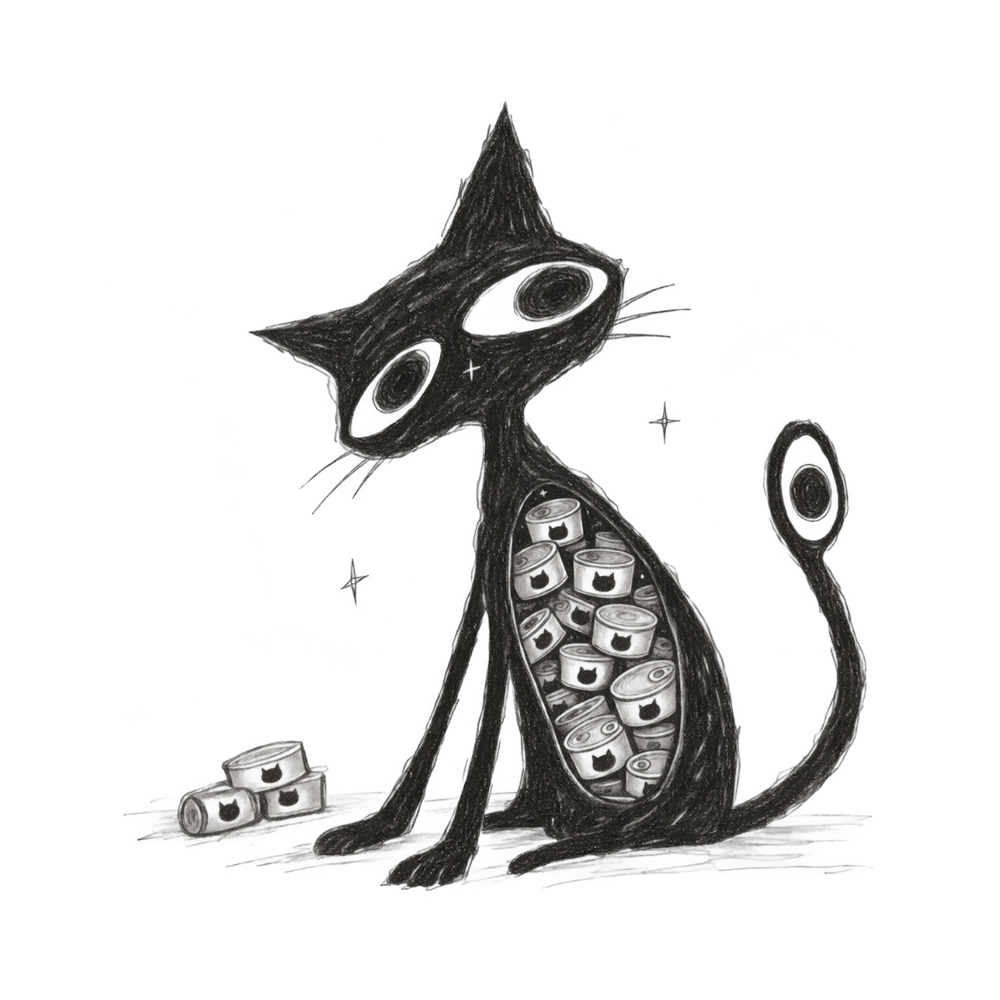
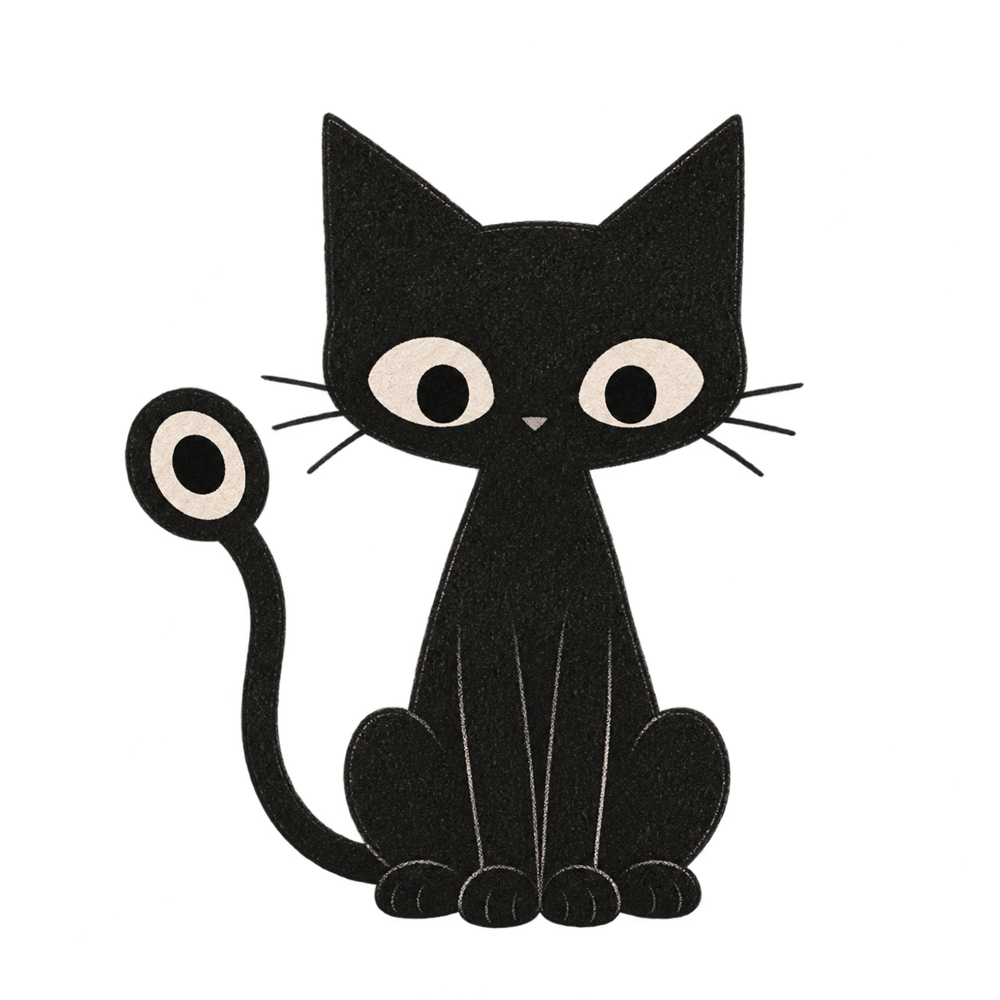

Before the shape became familiar.
A quiet beginning. Still, Hogeshy.
Before the eyes settled. Before the shape became familiar. Before Hogeshy knew what Hogeshy was.
These are earlier forms of Hogeshy.

The form currently used as Hogeshy's basic mark.

A quiet beginning. Still, Hogeshy.

A trace from the days when Hogeshy was still becoming.